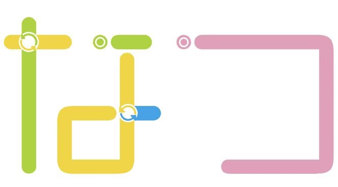

100%
简
繁
EN
日本語
森脇正敏 - 甘いひととき

夏苏城轨道交通
NATSU STELLAR RAILWORK
公司介绍
运营线路
运营线网
建设消息
建设规划
发展沿革
风物志
公司介绍
运营线路 · 城市动脉
点击卡片查看线路详情
运营线网 · 标识图
建设消息
14号线三期开通试运营
2026-03-29
仙人掌塔完工
2026-03-15
14号线二期开通试运营
2026-03-03
10号线开通试运营
2026-01-10
建设规划
12号线 · 高架线
13号线 · 远郊线
11号线 · 西线
发展沿革
查看更多
沿线风物志 · 一站一景